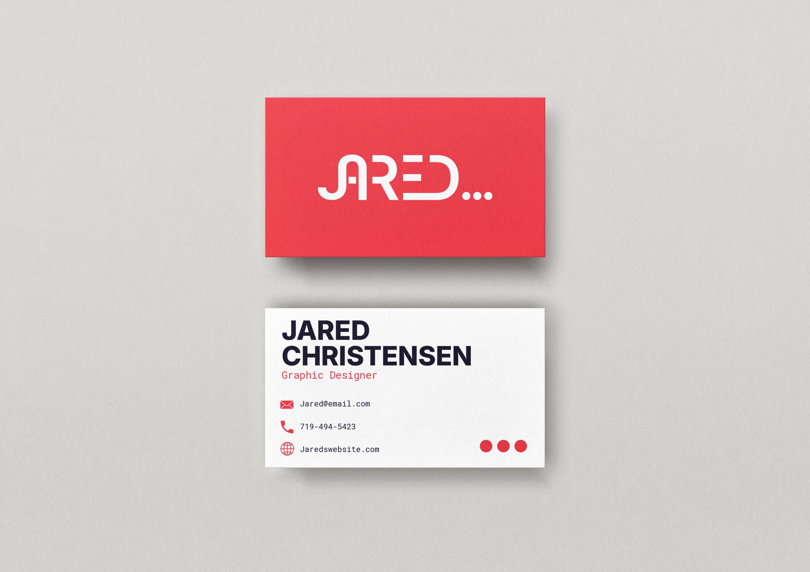
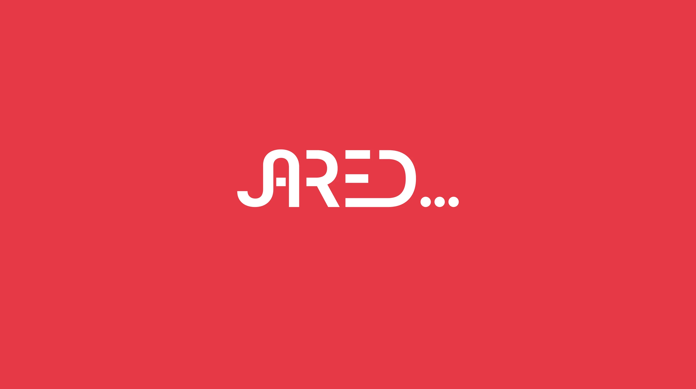
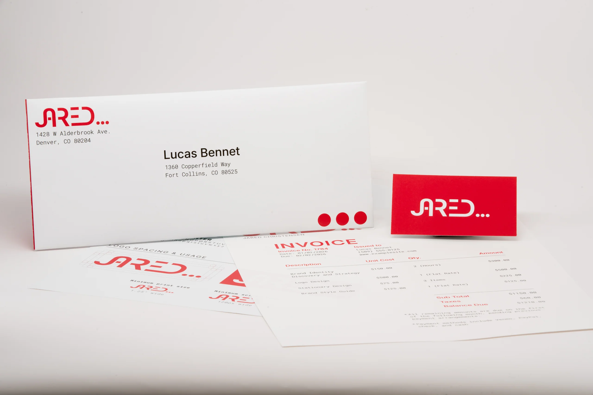
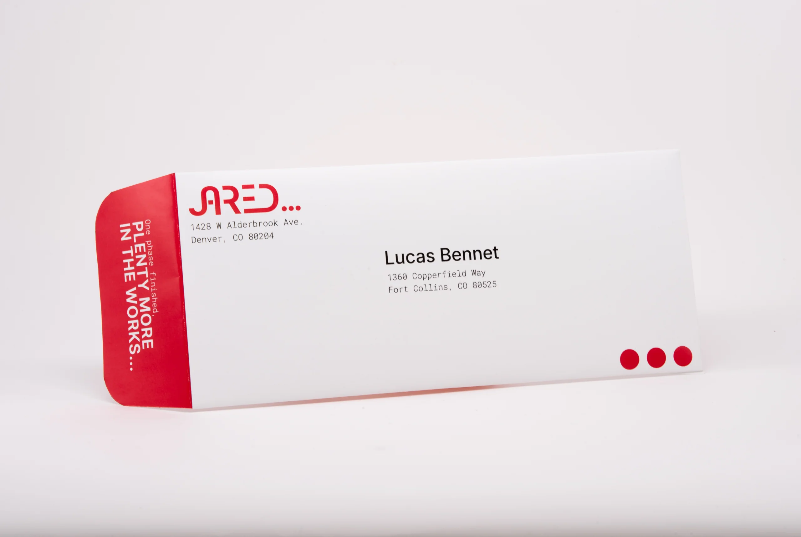
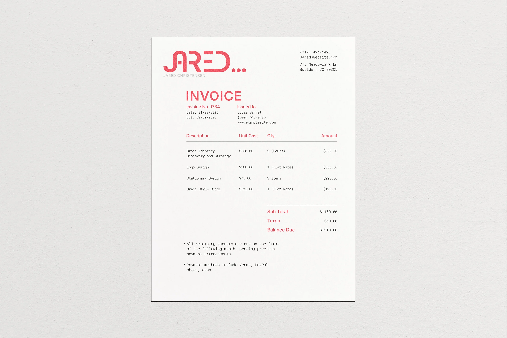
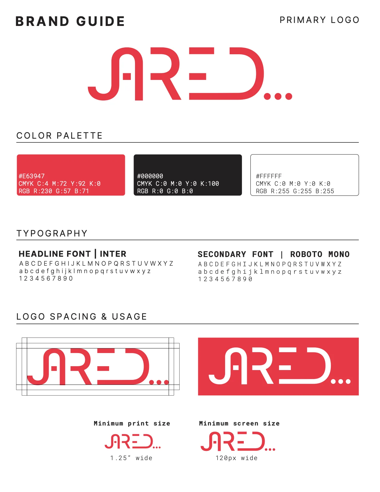
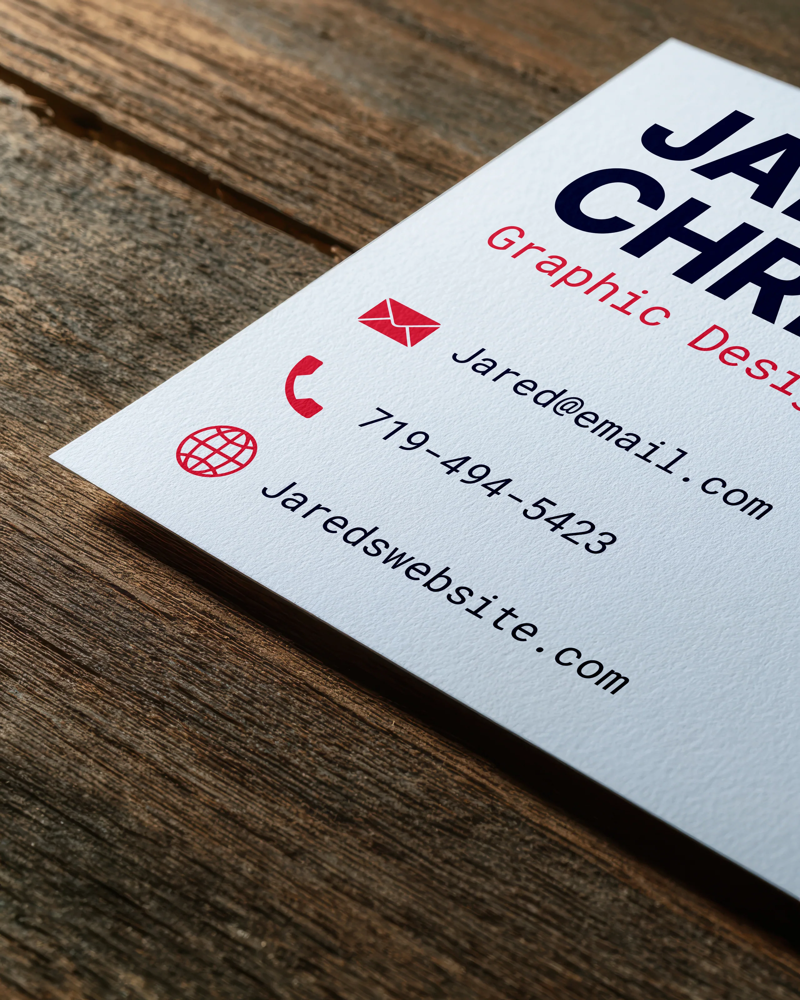
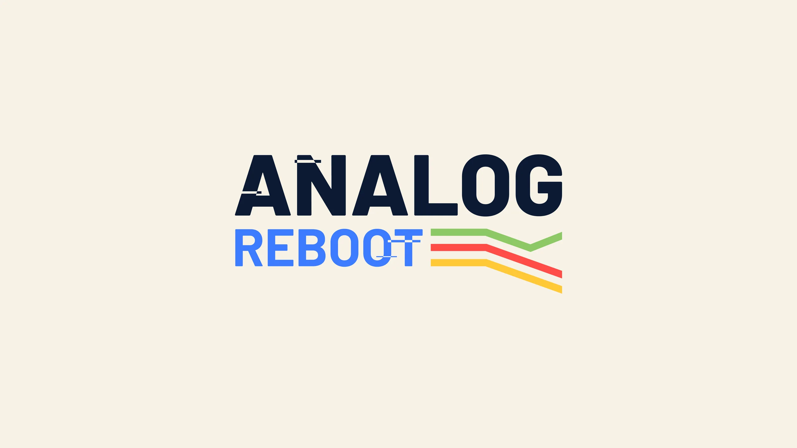

01 · Business cards
A red textured front, and a clean monospace back on the grid.

Personal identity · Stationery · Guidelines
A personal identity for a designer, built around one idea: the work is never finished.
The wordmark ends in an ellipsis, a “to be continued”. It is a mark for someone who is always working on what comes next.
The stationery takes it into print: Marathon Red, black and white, a strict grid and a monospace for the small details.

The full suite

A red textured front, and a clean monospace back on the grid.

Built around opening it. The red inner flap hides the line “plenty more in the works…”.

The everyday paperwork on the same grid, so even an invoice looks like the brand.



Analog Reboot